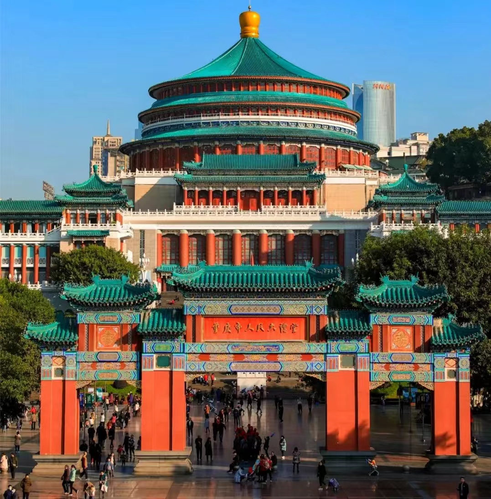
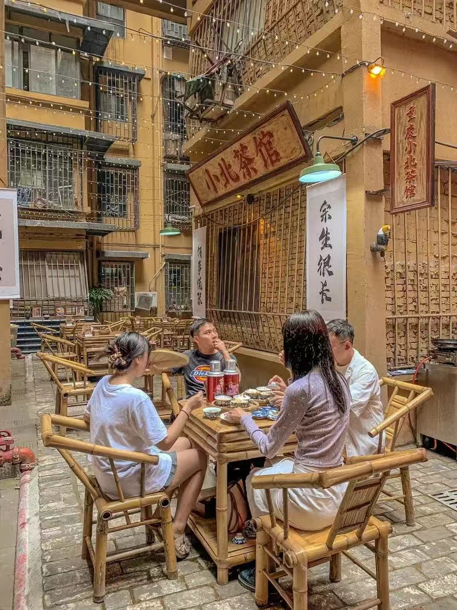
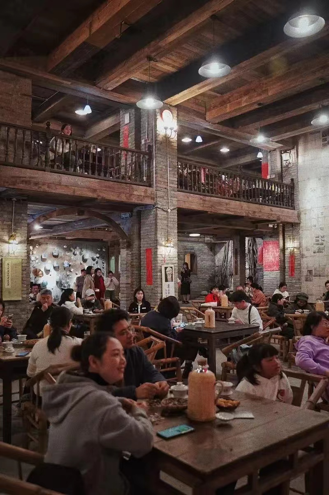

地势地貌
重庆，这座山城，以其独特的地理位置而著称。它坐落在长江与嘉陵江的交汇处，四周群山环抱，江水穿城而过，形成了“山中有城，城中有山，山即是城，城即是山”的独特风貌。这种地理位置不仅赋予了重庆壮丽的自然景观，更使得这座城市在历史的长河中扮演了重要的角色。
重庆之所以叫山城，就是因为这里山多，最重要的是因为重庆城是依山而建的。在重庆随处可见几十层的高楼，你可以在大厦的中部直接下到地面，当然不是跳楼也不是坐电梯，因为这里有天桥直接通往与楼平行的半山腰。所以在重庆，总有爬不完的坡坡坎坎在等着你。另外，重庆的母城渝中半岛其实是一个突起的山脊，朝天门海拔168米，解放碑地区平均海拔249米，枇杷山海拔340米，鹅岭海拔400米，而这些落差都是在9平方公里的渝中半岛上。所以重庆“山城”实至名归。
独特风情

重庆的人民热情豪爽、耿直大方。他们有着坚韧不拔的性格和乐观向上的生活态度。在重庆，你可以感受到浓浓的人情味和生活气息。茶馆里，人们悠闲地喝着茶，摆着龙门阵；街头巷尾，充满了欢声笑语和热闹的氛围。
重庆人的性格特点包括火辣外向、豪爽耿直和吃苦耐劳。他们性格刚烈而火辣，真诚热情，耿直和豪爽闻名全国。重庆人动手不动口，性格刚烈而火辣，没有城府，没有假装的深沉，有的只是真诚和热情。他们为人坦荡，个个都想充当英雄角色。重庆人吃苦耐劳，这种精神在别的地方是极其稀罕的。
重庆人的生活方式充满了地方特色。他们喜欢喝茶、打麻将，享受悠闲的生活。重庆人喜欢交朋友，无论是亲朋好友还是陌生人，都能感受到他们的热情和真诚。重庆的美食也是其风土人情的重要组成部分，如重庆火锅、小面、酸辣粉等特色美食，吸引了无数食客前来品尝。

历史沿革
重庆的历史可以追溯到遥远的古代。早在200万年前，这里就有了人类的足迹。作为巴文化的发源地，重庆见证了中华民族悠久的历史和灿烂的文化。从巴国都城到江州、渝州、恭州，再到如今的重庆，这座城市的名字和地位在历史的长河中不断变迁，但始终保持着其独特的魅力和活力。
重庆的历史可以追溯到3000多年前的建城史，自古被称为“天生重庆”。宋光宗时期，升恭州为重庆府，由此得名。重庆不仅是国家历史文化名城，还是巴渝文化的发祥地。清末重庆开埠及国民政府迁都重庆，使其成为近代中国大后方政治军事经济文化中心。新中国成立后，重庆在1997年再次成为直辖市，成为成渝金融法院驻地和中欧班列首发城市。
重庆是长江上游地区经济中心和西南地区的工商业重镇，拥有丰富的自然资源和发展潜力。其经济建设形成了大农业、大工业、大交通、大流通并存的格局。2023年，重庆地区生产总值达到30145.79亿元，比上年增长6.1%。
舌尖上的重庆
重庆火锅--麻辣中的山城情怀
一口铁锅，半锅红油，几勺辣椒，一把花椒，再添上精心熬制的骨汤，便构成了火锅的灵魂。火焰在锅底跳跃，红油在热浪中翻滚，散发出诱人的香气。食材在锅中起伏沉浮，每一片肉、每一颗菜，都在这麻辣的汤底中完成了华丽的转身。
在这座充满魅力的山城里，重庆火锅以其独特的魅力，成为了连接人与人之间情感的纽带。无论是在寒冷的冬日还是在炎热的夏季，无论是在繁华的市中心还是在幽静的山间小屋，只要有一口热气腾腾的重庆火锅在桌上，那么生活便充满了温暖与希望。
重庆火锅店的店内环境通常充满热烈的氛围，装修风格多样，既有传统的川渝风情，也有现代时尚的元素。店内常常座无虚席，食客们围炉而坐，边吃边聊，享受火锅带来的美味与欢乐。此外，一些重庆火锅店还会在店内播放具有地方特色的音乐或视频，营造出更加浓厚的文化氛围。
重庆酸辣粉&小面--街头美食代言人
重庆酸辣粉是重庆城区广为流传的一种地方传统名小吃，以其独特的麻、辣、鲜、香、酸且油而不腻的口味深受全国人民喜爱。辣的过瘾，酸的开胃。
新鲜的小麦粉面条，煮熟后筋道爽滑，搭配上特制的麻辣汤料，让人一吃难忘。葱、蒜、酱、醋、辣椒，这些看似普通的调料，在重庆厨师的巧手下，却能化腐朽为神奇，调制出一碗碗令人垂涎欲滴的小面。
麻辣串串香--味蕾上的跳动
牛油与各种香料慢火熬制，直至色泽红亮、香气四溢，这不仅是对食材的尊重，更是对食客味蕾的极致诱惑。每一口串串，都是对味觉的一次全新挑战，辣而不燥，麻中带香，让人欲罢不能。
毛血旺--麻辣鲜香，火锅中的传奇
毛血旺是一道非常有特色的川菜菜肴，它的麻、辣、鲜、香、烫、脆、嫩、酥、爽等特点让人一吃难忘。同时，它的营养价值也非常丰富，富含各种营养成分，是一道健康又美味的菜肴。如果你还没有尝试过毛血旺的话，不妨去品尝一下这道美食吧！
山城小汤圆--舌尖上的飞跃
山城小汤圆是重庆市的传统小吃之一，以其皮薄馅嫩、味道鲜美、口感细腻而著名。它的主要原料是糯米粉和芝麻馅，再加入少许猪油等调味料制作而成。山城小汤圆的个头小巧玲珑，色泽洁白如玉，口感柔软细腻，是一道美味可口的小吃。
直辖市的魅力之旅
洪崖洞--悬崖上的千与千寻
层层叠叠的吊脚楼依山而建，错落有致，宛如一部立体的史诗。夜晚的洪崖洞更是灯火辉煌，璀璨夺目。千万盏灯火在夜色中闪烁，与江水交相辉映，形成一幅美丽的画卷。漫步在洪崖洞的街头巷尾，你可以感受到那份独特的山城韵味，仿佛置身于千与千寻的奇幻世界。
解放碑步行街--城市地标，繁华起点
高耸入云的纪念碑，不仅是历史的见证者，更是现代重庆的繁华起点。无论是白天还是夜晚，解放碑都是人流如织，热闹非凡。周围的商场、餐厅、娱乐场所林立，是购物、美食、娱乐的好去处。站在解放碑下，你可以感受到这座城市的脉搏与活力，也可以展望未来的无限可能。
磁器口古镇--古韵悠悠，时光流转
漫步在古镇的街头巷尾，仿佛穿越了时空的隧道，回到了古老的巴渝时代。青石板路，曲径通幽，两旁的店铺琳琅满目，传统的工艺品、特色小吃应有尽有。古镇的建筑古朴典雅，飞檐翘角，雕梁画栋，每一处都透露着浓厚的历史底蕴。在这里，你可以感受到那份宁静与悠闲，仿佛时光都在此刻停滞。
武隆喀斯特--鬼斧神工，自然奇观
武隆喀斯特旅游区集峡谷、天生桥、天坑、溶洞等自然景观于一体，每一处都充满了大自然的神奇与魅力。无论是壮观的乌江画廊，还是神秘的天生三桥，都让人叹为观止。在这里，你可以感受到大自然的鬼斧神工，也可以领略到人类与自然的和谐共生。
长江索道--刺激爽快，魔幻城市
山与城的牵挂，人与江的对白。千厮门大桥你可以感受到“山城的夜景 不负千里迢迢的路程”的惬意。它是我们人生路上的坐标，告诉我们，一半是回忆，一半是继续，让我们依旧光彩依旧兴致盎然。
大足石刻--千年石刻,艺术瑰宝
千年石刻，雕刻精美，栩栩如生，展现了古代匠人的卓越技艺和深厚文化底蕴。每一尊石刻都是一部历史，每一刀一凿都凝聚着匠人的心血与智慧。在这里，你可以欣赏到佛教艺术的精华，也可以感受到古代文化的独特魅力。
瞿塘峡--峡江如画，壮美无涯
瞿塘峡是长江三峡中最险峻的一段，两岸峭壁如削，峡江如画。江水在峡谷中奔腾咆哮，声势浩大，让人感受到大自然的雄伟与壮美。乘坐游船穿梭于峡谷之间，你可以欣赏到峡江两岸的秀丽风光，也可以感受到那份惊心动魄的美。站在三峡之巅，你可以领略到大自然的神奇与魅力，也可以感受到人与自然的和谐共生。